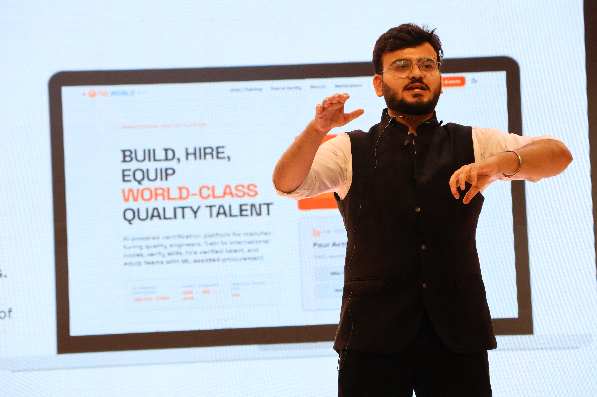
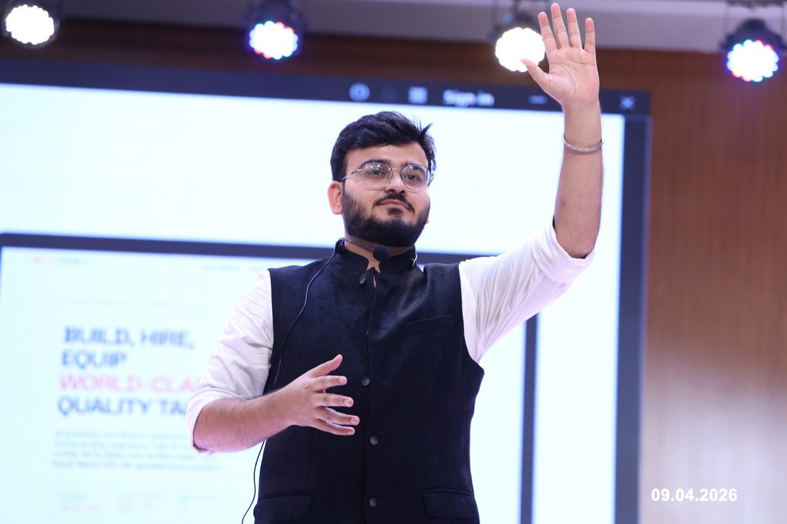
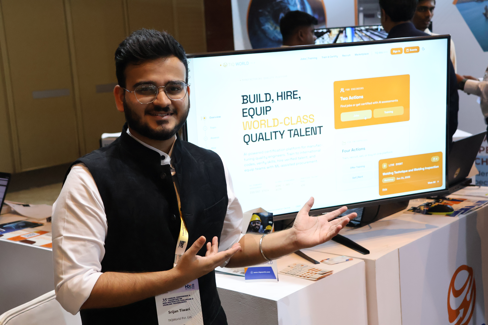
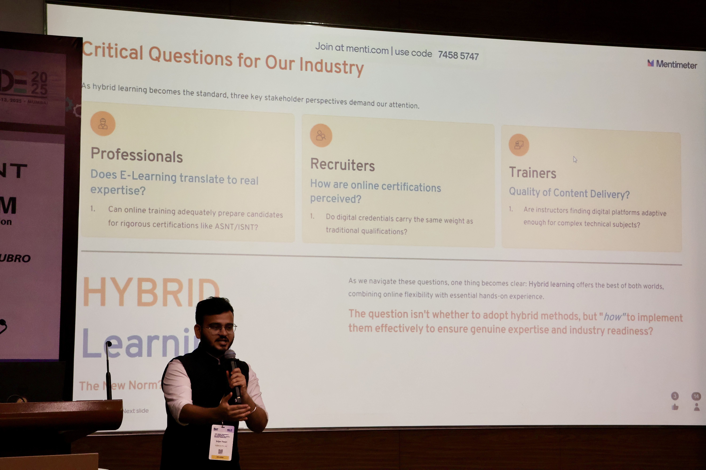
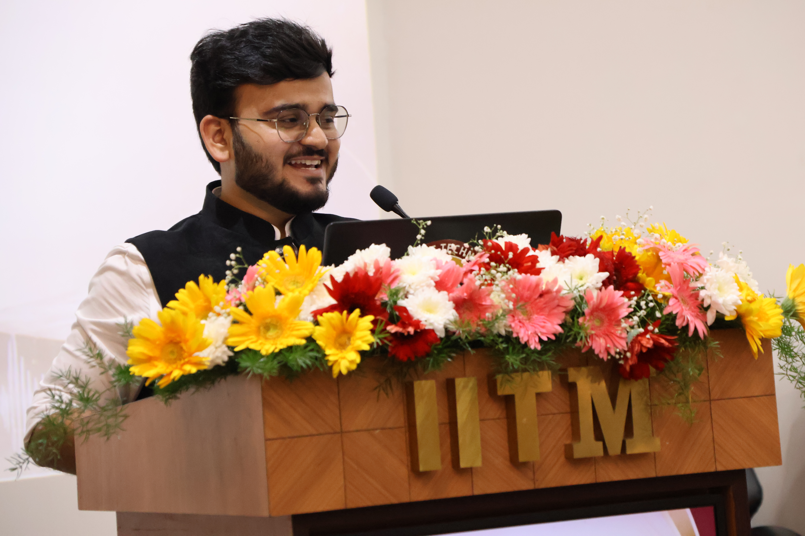
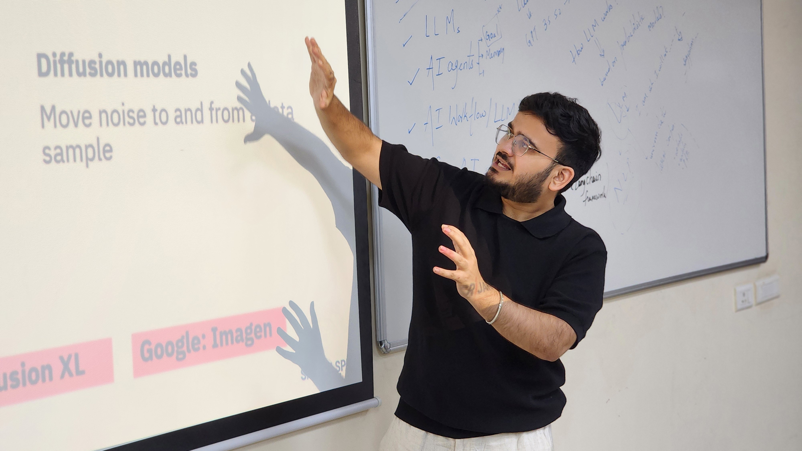
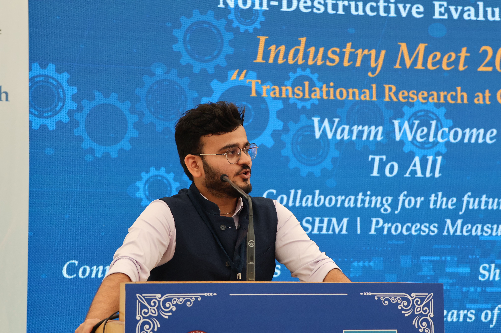

Why Most AI Conversations Still Miss The Real Problem
The biggest barrier is rarely the model. It is whether people trust the workflow, the decisions, and the outcomes that come from it.
Read FeaturedThis page is built as the writing arm of the overall brand. Same visual system. Same voice. But the body is structured like a real blog: featured writing, recent posts, long-form ideas, and a space to keep publishing regularly.
Technology usually arrives before systems are ready for it. The gap is not just technical. It is cultural, operational, and deeply tied to trust — especially in manufacturing, quality, and workforce transformation.
Read Full Article →
This section can grow as the site grows. It gives the page a real blog structure, makes it easy to organize future posts, and keeps the writing side of the brand feeling intentional.
The layout here is card-led so you can keep posting regularly. Each post has room for a tag, title, excerpt, and metadata — just like a real editorial page should.

The biggest barrier is rarely the model. It is whether people trust the workflow, the decisions, and the outcomes that come from it.
Read Featured
In technical industries, skill mismatch, verification, and learning design create bigger hiring problems than people want to admit.
Read Article →
Founders love speed. Legacy industries do not. The challenge is learning how to move with urgency without losing credibility.
Read Article →
Great teaching does more than explain. It gives the room a new way to think, decide, and act once the session ends.
Read Article →
The edge will not come from knowing buzzwords. It will come from making difficult ideas understandable and usable for others.
Read Article →
Even strong technical systems fail to scale when people cannot understand the value, urgency, and trust behind them.
Read Article →This gives the page depth. It is not just a grid of cards — it also has a long-form reading area that can be replaced with real blog content whenever you publish a new featured piece.
When people talk about transformation, they often describe it as a technology challenge. New systems. New tools. New models. Better automation. But in mature industries, that is rarely the full story. The deeper problem is whether people trust what is being introduced and whether they believe it belongs in the way they already work.
That is why adoption moves slower than expected. It is not always resistance to innovation. Sometimes it is a rational response to risk, accountability, regulation, reputation, and the cost of getting things wrong in environments where precision matters.
The future does not arrive when technology becomes possible. It arrives when systems begin to trust it enough to use it.
In manufacturing, quality, education, and hiring, people do not adopt new workflows simply because they are impressive. They adopt them when they feel understandable, defensible, and valuable inside real operating conditions. That is why communication, learning design, and credibility matter as much as raw technical power.
This page is meant to carry exactly these kinds of reflections. It should be able to hold sharp short-form opinions, thoughtful essays, and recurring insights that deepen the overall brand beyond speaking, teaching, and startup work.